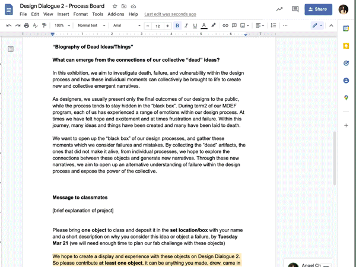
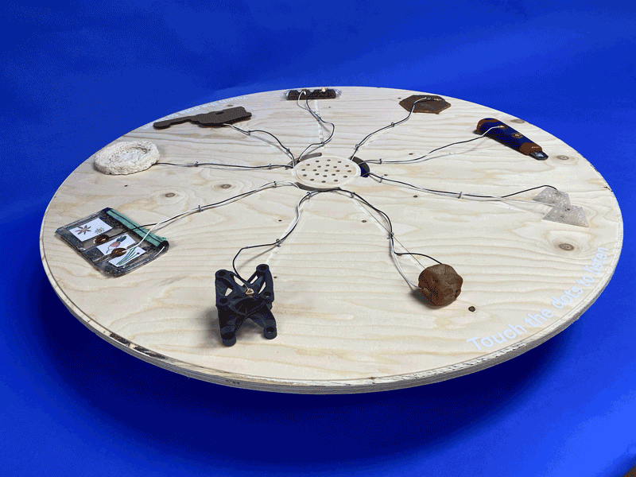
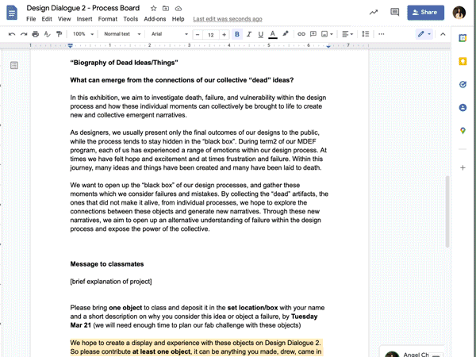
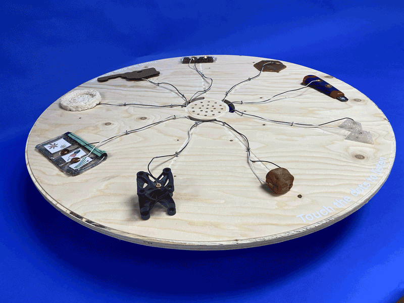

🗓 25 March 2022
We had a pretty concrete concept which we agreed on from the beginning and the most of our effort was put into an interesting execution of the concept. Jose and I talked about different ways we can incorportate this theme into the challenge with the required tasks. We decided to prompt our classmates to gather an object which was important to them in their process in any way. We focused less on failures and more on process because we thought we would get the most variety of objects, which we wanted. It was interesting to see that most of our classmates brought prototypes which were produced, and a big part of the proces.
Some of our initial ideas included creating a large display with the objects and connecting them on the surface with electronics like a circuit board or creating a detective "kit" game for individuals to find their own stories within the objects. We decided to go with the idea of laying out the objects on the surface of a table because it made more sense within the Design Dialogue context, where many people will be walking around and engaging with the piece. We also liked the idea of the relationships the objects will form on a visual level, just sitting next to one another on the table.
To gather the objects, we sent a message to our classmates asking them to bring an object that was significant within their design process in Term 2. We intentionally left the prompt open so we can create more of a personal reflection and gather a wider range of objects. Once we collected some objects from our classmates, we realized that most of them were prototypes or more "finished" process pieces.

Because we all experienced a lack of time during our first microchallenge, we decided to prioritize time management and early prototyping. We also acknowledged that some compromises will have to be made. One of the compromises we made was in using the pre-designed Makey Makey electronic board instead of making and programming the electronics from scratch. The makey makey had 9 input and output channels which limited us to 9 process objects and stories.
Each of us were involved in all parts of the process but I focused on collecting and curating the objects and building the CNC cut platform that will hold the objects and the electronics. In designing the platform, we had to first determine a few factors including the number of objects, the aesthetic of electrical components, the size of speaker, and the electrical needs. We wanted to aesthetic to reveal the raw materiality (wires and wood) but still look neat and considered. Also, we realized we had to use the computer as our speaker and needed the platform to be elevated so we can encase the makey makey and computer below it. With these values in mind, I came up with a circular design that distributes all the objects evenly and is accessible from all sides (opossed to a triangle or square with defined sides and corners). I made holes in the center to allow And suggest sound coming from the laptop below the surface.
In decided to collect one sentence phrases from our classmates that speak to the significance of the object. We wanted to keep these phrases general, leaving out subjective words like "I", so they would flow together when played one after the other. We also decided to use a voice geerated by AI and not real human voices in order to keep the content as neutral as possible.

Once we gathered all the audio and objects, we placed them around the platform and started the wiring. I helped solder the capacitive sensors to the wires and make them tidy and easier to work with with the rubber heat attachment. There were many wires and we worked to make sure they were all in the right place. This is something we hadn't considered in the designing of the circular platform, but if I was to redesign it, I would make a compartment for all the cables to sit in.
See our project repository here.
Key Lessons Learned:
Micro Challenge 2
Jose, Aparna, and I joined together for this micro challenge to continue making of the idea we formed during Design Dialogue prep. There is always pressure in Design Dialogues to curate or prepare something to share with others in a way that will express our work and processes in an authentic and impressive way. As designers and makers, we tend to want to show work that is appealing or successful, leaving out some of the process artifacts and objects that have been crucial in getting to where we are now, which we deemed unsuccessful. We thought of an idea of collecting some of these "dead objects" to create an experience that will reveal our individual processes of term2, and also generate new connections and possibilites through the act of gathering them.We had a pretty concrete concept which we agreed on from the beginning and the most of our effort was put into an interesting execution of the concept. Jose and I talked about different ways we can incorportate this theme into the challenge with the required tasks. We decided to prompt our classmates to gather an object which was important to them in their process in any way. We focused less on failures and more on process because we thought we would get the most variety of objects, which we wanted. It was interesting to see that most of our classmates brought prototypes which were produced, and a big part of the proces.
Some of our initial ideas included creating a large display with the objects and connecting them on the surface with electronics like a circuit board or creating a detective "kit" game for individuals to find their own stories within the objects. We decided to go with the idea of laying out the objects on the surface of a table because it made more sense within the Design Dialogue context, where many people will be walking around and engaging with the piece. We also liked the idea of the relationships the objects will form on a visual level, just sitting next to one another on the table.
To gather the objects, we sent a message to our classmates asking them to bring an object that was significant within their design process in Term 2. We intentionally left the prompt open so we can create more of a personal reflection and gather a wider range of objects. Once we collected some objects from our classmates, we realized that most of them were prototypes or more "finished" process pieces.

Because we all experienced a lack of time during our first microchallenge, we decided to prioritize time management and early prototyping. We also acknowledged that some compromises will have to be made. One of the compromises we made was in using the pre-designed Makey Makey electronic board instead of making and programming the electronics from scratch. The makey makey had 9 input and output channels which limited us to 9 process objects and stories.
Each of us were involved in all parts of the process but I focused on collecting and curating the objects and building the CNC cut platform that will hold the objects and the electronics. In designing the platform, we had to first determine a few factors including the number of objects, the aesthetic of electrical components, the size of speaker, and the electrical needs. We wanted to aesthetic to reveal the raw materiality (wires and wood) but still look neat and considered. Also, we realized we had to use the computer as our speaker and needed the platform to be elevated so we can encase the makey makey and computer below it. With these values in mind, I came up with a circular design that distributes all the objects evenly and is accessible from all sides (opossed to a triangle or square with defined sides and corners). I made holes in the center to allow And suggest sound coming from the laptop below the surface.
In decided to collect one sentence phrases from our classmates that speak to the significance of the object. We wanted to keep these phrases general, leaving out subjective words like "I", so they would flow together when played one after the other. We also decided to use a voice geerated by AI and not real human voices in order to keep the content as neutral as possible.

Once we gathered all the audio and objects, we placed them around the platform and started the wiring. I helped solder the capacitive sensors to the wires and make them tidy and easier to work with with the rubber heat attachment. There were many wires and we worked to make sure they were all in the right place. This is something we hadn't considered in the designing of the circular platform, but if I was to redesign it, I would make a compartment for all the cables to sit in.
See our project repository here.
Key Lessons Learned:
- To design something well with participants, it's important to be specific and focused in the framework you create (ie. prompts, questions) to gather information
- Compromising doing everything from scratch and focusing on practical solutions
- Delegating and being accountable for individual tasks